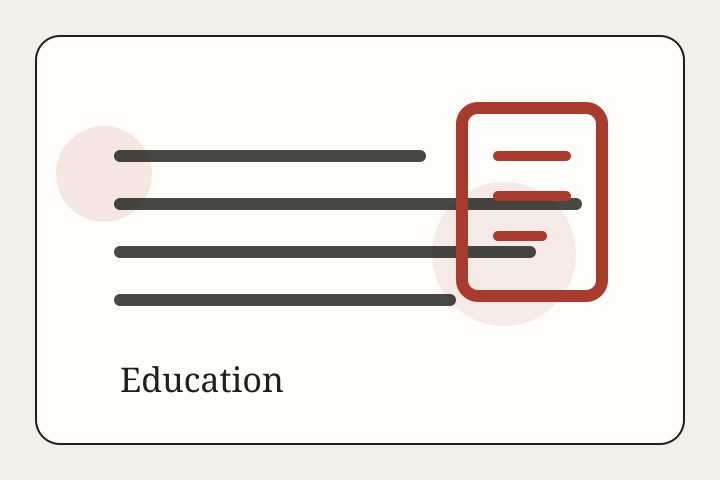

Education • Feature
The Phone-Free School Day Is a Live Experiment
As states and districts restrict student phones, schools are testing whether attention can be rebuilt by policy, culture, storage pouches, enforcement, and trust.
Education Desk
Schools, campuses, attendance, learning, and public-system capacity.

Education • Feature
As states and districts restrict student phones, schools are testing whether attention can be rebuilt by policy, culture, storage pouches, enforcement, and trust.

Education • Analysis
Enrollment finally looks steadier across higher education, but the recovery belongs more to community colleges and public campuses than to the sector as a whole, and the applicant pipeline is widening in ways that still demand better support after admission.

Education • Report
The next phase of school recovery is less about whether classes reopened and more about whether students are present, focused, and supported often enough for learning to accumulate.